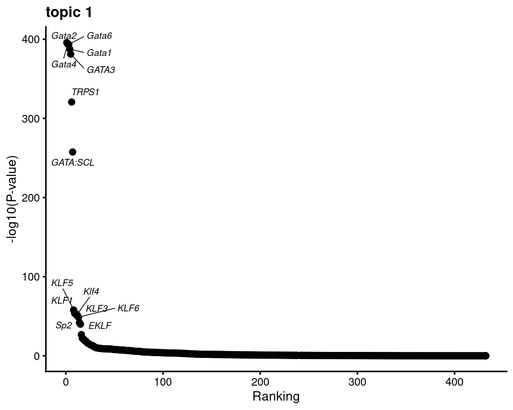
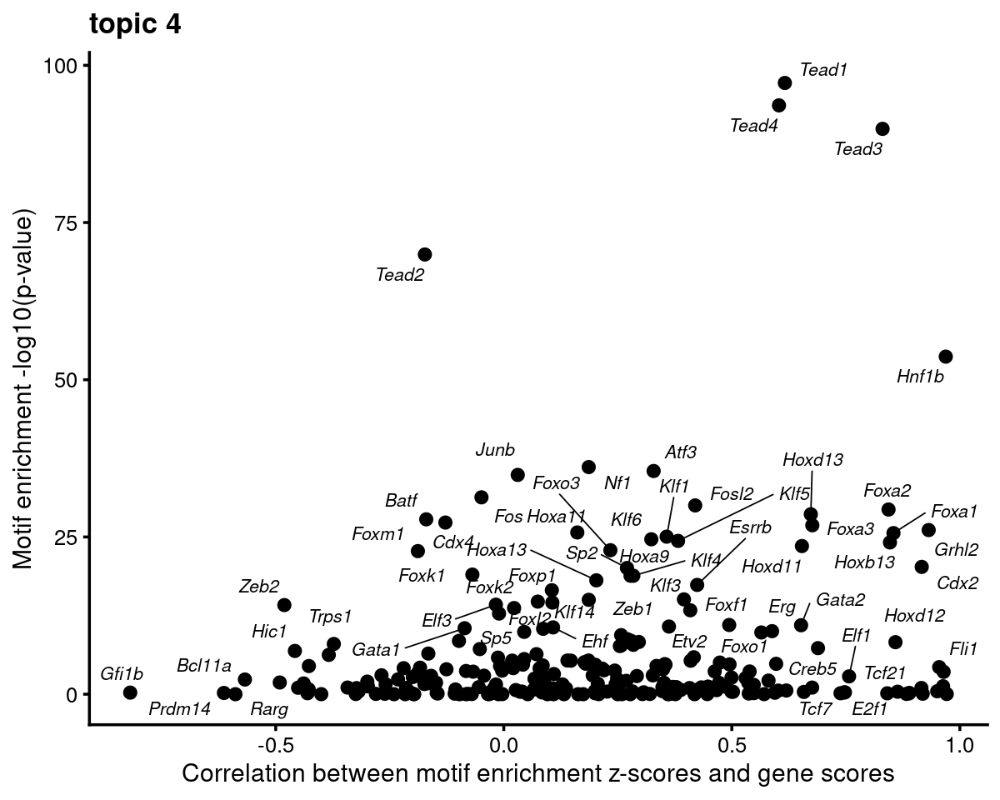

Motif analysis using topic modeling results for Cusanovich et al (2018) scATAC-seq data
Kaixuan Luo
Last updated: 2021-01-21
Checks: 7 0
Knit directory: scATACseq-topics/
This reproducible R Markdown analysis was created with workflowr (version 1.6.2). The Checks tab describes the reproducibility checks that were applied when the results were created. The Past versions tab lists the development history.
Great! Since the R Markdown file has been committed to the Git repository, you know the exact version of the code that produced these results.
Great job! The global environment was empty. Objects defined in the global environment can affect the analysis in your R Markdown file in unknown ways. For reproduciblity it's best to always run the code in an empty environment.
The command set.seed(20200729) was run prior to running the code in the R Markdown file. Setting a seed ensures that any results that rely on randomness, e.g. subsampling or permutations, are reproducible.
Great job! Recording the operating system, R version, and package versions is critical for reproducibility.
Nice! There were no cached chunks for this analysis, so you can be confident that you successfully produced the results during this run.
Great job! Using relative paths to the files within your workflowr project makes it easier to run your code on other machines.
Great! You are using Git for version control. Tracking code development and connecting the code version to the results is critical for reproducibility.
The results in this page were generated with repository version 780af9e. See the Past versions tab to see a history of the changes made to the R Markdown and HTML files.
Note that you need to be careful to ensure that all relevant files for the analysis have been committed to Git prior to generating the results (you can use wflow_publish or wflow_git_commit). workflowr only checks the R Markdown file, but you know if there are other scripts or data files that it depends on. Below is the status of the Git repository when the results were generated:
Ignored files:
Ignored: .Rhistory
Ignored: .Rproj.user/
Untracked files:
Untracked: analysis/diff_count_Buenrostro2018_chomVAR_scPeaks.Rmd
Untracked: analysis/gene_analysis_Cusanovich2018.Rmd
Untracked: analysis/process_data_Buenrostro2018_Chen2019.Rmd
Untracked: analysis/single_cell_rnaseq_demo.Rmd
Untracked: output/Cusanovich2018/
Untracked: output/clustering-Cusanovich2018.rds
Untracked: output/gsea_topic_1_Cusanovich2018-k=13-TSS-sum.html
Untracked: output/gsea_topic_1_Cusanovich2018-k=13-TSS-sum.png
Untracked: output/gsea_topic_1_Cusanovich2018-k=13-TSS-sum_files/
Untracked: output/gsea_topic_1_Cusanovich2018-k=13-genebody-sum.html
Untracked: output/gsea_topic_1_Cusanovich2018-k=13-genebody-sum.png
Untracked: output/gsea_topic_1_Cusanovich2018-k=13-genebody-sum_files/
Untracked: output/volcano_topic_1_Cusanovich2018-k=13-TSS-sum.html
Untracked: output/volcano_topic_1_Cusanovich2018-k=13-TSS-sum.png
Untracked: output/volcano_topic_1_Cusanovich2018-k=13-TSS-sum_files/
Untracked: output/volcano_topic_1_Cusanovich2018-k=13-genebody-sum.html
Untracked: output/volcano_topic_1_Cusanovich2018-k=13-genebody-sum.png
Untracked: output/volcano_topic_1_Cusanovich2018-k=13-genebody-sum_files/
Untracked: scripts/fit_all_models_Buenrostro_2018_chromVar_scPeaks_filtered.sbatch
Unstaged changes:
Modified: analysis/cisTopic_Buenrostro2018_chomVAR_scPeaks.Rmd
Modified: analysis/motif_gene_analysis_Cusanovich2018.Rmd
Modified: analysis/plots_Lareau2019_bonemarrow.Rmd
Modified: code/plots.R
Modified: scripts/fit_all_models_Buenrostro_2018.sbatch
Modified: scripts/fit_cisTopic_Buenrostro_2018_chromVAR_scPeaks.sh
Modified: scripts/postfit_Buenrostro2018.sh
Note that any generated files, e.g. HTML, png, CSS, etc., are not included in this status report because it is ok for generated content to have uncommitted changes.
These are the previous versions of the repository in which changes were made to the R Markdown (analysis/motif_analysis_Cusanovich2018.Rmd) and HTML (docs/motif_analysis_Cusanovich2018.html) files. If you've configured a remote Git repository (see ?wflow_git_remote), click on the hyperlinks in the table below to view the files as they were in that past version.
| File | Version | Author | Date | Message |
|---|---|---|---|---|
| Rmd | 780af9e | kevinlkx | 2021-01-21 | added motif logo plots |
| html | 1307c0f | kevinlkx | 2021-01-20 | Build site. |
| Rmd | c7428cd | kevinlkx | 2021-01-20 | minor adjustment on the figures |
| html | 84b236a | kevinlkx | 2021-01-20 | Build site. |
| Rmd | 4458ed5 | kevinlkx | 2021-01-20 | added KLF/SP genes and added an option to compute correlation using -log10P |
| html | 1fb78db | kevinlkx | 2021-01-20 | Build site. |
| Rmd | c9d6742 | kevinlkx | 2021-01-20 | updated the correlations between motif enrichment (using z-score) and gene z-score |
| html | 1ab3d72 | kevinlkx | 2021-01-19 | Build site. |
| Rmd | 0134bdf | kevinlkx | 2021-01-19 | fix colors in scatter plots of create_motif_gene_scatterplot |
| html | a29293a | kevinlkx | 2021-01-19 | Build site. |
| Rmd | f51b56e | kevinlkx | 2021-01-19 | added colors to scatterplots for motif enrichment and gene scores |
| html | 14eac34 | kevinlkx | 2021-01-19 | Build site. |
| Rmd | 5f18411 | kevinlkx | 2021-01-19 | Plot motif enrichment and correlate with gene scores |
Here we perform TF motif analysis for the Cusanovich et al (2018) scATAC-seq result inferred from the multinomial topic model with \(k = 13\).
Load packages and some functions used in this analysis
library(Matrix)
library(fastTopics)
library(dplyr)
library(tidyr)
library(ggplot2)
library(ggrepel)
library(cowplot)
library(plotly)
library(htmlwidgets)
library(DT)
library(reshape2)
library(Logolas)
library(grid)
source("code/motif_analysis.R")
source("code/plots.R")Load data and topic model results
Load the data and the \(k = 13\) Poisson NMF fit results.
data.dir <- "/project2/mstephens/kevinluo/scATACseq-topics/data/Cusanovich_2018/processed_data/"
load(file.path(data.dir, "Cusanovich_2018.RData"))
rm(counts)fit.dir <- "/project2/mstephens/kevinluo/scATACseq-topics/output/Cusanovich_2018"
fit <- readRDS(file.path(fit.dir, "/fit-Cusanovich2018-scd-ex-k=13.rds"))$fit
fit_multinom <- poisson2multinom(fit)Visualize by Structure plot grouped by tissues
set.seed(10)
colors_topics <- c("#a6cee3","#1f78b4","#b2df8a","#33a02c","#fb9a99","#e31a1c",
"#fdbf6f","#ff7f00","#cab2d6","#6a3d9a","#ffff99","#b15928",
"gray")
rows <- sample(nrow(fit$L),4000)
samples$tissue <- as.factor(samples$tissue)
p.structure <- structure_plot(select(fit_multinom,loadings = rows),
grouping = samples[rows, "tissue"],n = Inf,gap = 40,
perplexity = 50,topics = 1:13,colors = colors_topics,
num_threads = 4,verbose = FALSE)
print(p.structure)
| Version | Author | Date |
|---|---|---|
| 14eac34 | kevinlkx | 2021-01-19 |
Differential accessbility analysis of the ATAC-seq regions for the topics
Load results from differential accessbility analysis for the topics
out.dir <- "/project2/mstephens/kevinluo/scATACseq-topics/output/Cusanovich_2018"
cat(sprintf("Load results from %s \n", out.dir))# Load results from /project2/mstephens/kevinluo/scATACseq-topics/output/Cusanovich_2018diff_count_topics <- readRDS(file.path(out.dir, "/diffcount-Cusanovich2018-13topics.rds"))Distribution of z-scores
zscore_topics <- melt(diff_count_topics$Z)
colnames(zscore_topics) <- c("region", "topic", "zscore")
levels(zscore_topics$topic) <- colnames(diff_count_topics$Z)
z.quantile.99 <- apply(abs(diff_count_topics$Z), 2, quantile, 0.99)
cat("z-score 99% quantile: \n")
print(z.quantile.99)
p.hist.zscores <- ggplot(zscore_topics, aes(x=zscore)) +
geom_histogram(binwidth=1, color="black", fill="white") +
coord_cartesian(xlim = c(-10, 30)) + theme_cowplot(font_size = 10) +
facet_wrap(~ topic, ncol=4)
print(p.hist.zscores)
| Version | Author | Date |
|---|---|---|
| 14eac34 | kevinlkx | 2021-01-19 |
# z-score 99% quantile:
# k1 k2 k3 k4 k5 k6 k7 k8
# 21.42992 31.48751 25.46082 25.97670 34.64418 37.09098 32.07250 39.65746
# k9 k10 k11 k12 k13
# 25.93102 15.88394 34.29782 39.80147 20.71928Volcano plot of the regions
topic 1 example
volcano_plot(diff_count_topics,k = 1,label_above_quantile = Inf,
subsample_below_quantile = 0.7, subsample_rate = 0.1)# 161397 out of 436206 data points will be included in plot
Motif enrichment analysis using HOMER
- Details about HOMER motif analysis:
- http://homer.ucsd.edu/homer/motif/
Motif enrichment result using regions with z-score above 99% quantile.
Compile Homer results across topics
homer.dir <- paste0(out.dir, "/motifanalysis-Cusanovich2018-k=13-quantile/HOMER")
cat(sprintf("Directory of motif analysis result: %s \n", homer.dir))
homer_res_topics <- readRDS(file.path(homer.dir, "/homer_knownResults.rds"))
selected_regions <- readRDS(file.path(homer.dir, "/selected_regions.rds"))
# Compile Homer results (pvalue and ranking) across topics
motif_res <- compile_homer_motif_res(homer_res_topics)
saveRDS(motif_res, paste0(homer.dir, "/homer_motif_enrichment_results.rds"))
cat("compiled homer motif results are saved in", paste0(homer.dir, "/homer_motif_enrichment_results.rds"))
motif_table <- data.frame(motif = gsub("/.*", "", rownames(motif_res$mlog10P)),
round(motif_res$mlog10P,2))
DT::datatable(motif_table, rownames = F, caption = "Motif enrichment (-log10P)")# Directory of motif analysis result: /project2/mstephens/kevinluo/scATACseq-topics/output/Cusanovich_2018/motifanalysis-Cusanovich2018-k=13-quantile/HOMER
# compiled homer motif results are saved in /project2/mstephens/kevinluo/scATACseq-topics/output/Cusanovich_2018/motifanalysis-Cusanovich2018-k=13-quantile/HOMER/homer_motif_enrichment_results.rdsTop 10 motifs in each topic
cat("Number of regions selected for each topic: \n")
print(mapply(nrow, selected_regions[1:(length(selected_regions)-1)]))
colnames_homer <- c("motif_name", "consensus", "P", "log10P", "Padj", "num_target", "percent_target", "num_bg", "percent_bg")
top_motifs <- data.frame(matrix(nrow=10, ncol = length(homer_res_topics)))
colnames(top_motifs) <- names(homer_res_topics)
for (k in 1:length(homer_res_topics)){
homer_res <- homer_res_topics[[k]]
colnames(homer_res) <- colnames_homer
homer_res <- homer_res %>% separate(motif_name, c("motif", "origin", "database"), "/")
top_motifs[,k] <- head(homer_res$motif, 10)
}
DT::datatable(data.frame(rank = 1:10, top_motifs), rownames = F, caption = "Top 10 motifs enriched in each topic.")# Number of regions selected for each topic:
# k1 k2 k3 k4 k5 k6 k7 k8 k9 k10 k11 k12 k13
# 4363 4363 4363 4363 4363 4363 4363 4363 4363 4363 4363 4363 4363Heatmap of motif enrichment across topics
Clustering motifs by hierarchical clustering (motifs with similar enrichment across topics are plotted together)
create_motif_enrichment_heatmap(motif_res, cluster_motifs = TRUE, cluster_topics = FALSE, filter_motifs = TRUE, min_enrichment = 50,
max_enrichment = 100, method_cluster = "average", font.size.motifs = 4, font.size.topics = 9)
# 114 out of 439 motifs included the heatmapCluster both motifs and topics by hierarchical clustering
create_motif_enrichment_heatmap(motif_res, cluster_motifs = TRUE, cluster_topics = TRUE, filter_motifs = TRUE, min_enrichment = 50,
max_enrichment = 100, method_cluster = "average", font.size.motifs = 4, font.size.topics = 9)
# 114 out of 439 motifs included the heatmapScatterplots of motif enrichment
# Plot enrichment (-log10 p-value) and ranking of the motifs
plots <- vector("list", ncol(motif_res$mlog10P))
names(plots) <- colnames(motif_res$mlog10P)
for( i in 1:length(plots)){
plots[[i]] <- create_motif_enrichment_ranking_plot(motif_res, k = i,
max.overlaps = 20, subsample = FALSE)
}
# do.call(plot_grid,plots)- Plot motif enrichment (-log10 p-value) and the ranking
Topic 1 example
print(plots[[1]])
# Plot motif enrichment (-log10 p-value) in each topic vs other topics
plots <- vector("list", ncol(motif_res$mlog10P))
names(plots) <- colnames(motif_res$mlog10P)
for( i in 1:length(homer_res_topics)){
plots[[i]] <- create_motif_enrichment_plot(motif_res, k = i,
max.overlaps = 20, subsample = TRUE)
}
# do.call(plot_grid,plots)- Plot motif enrichment (-log10 p-value) in topic 1 vs other topics
print(plots[[1]])
Motif enrichment vs gene score
Load pre-computed gene scores
gene.dir <- paste0(out.dir, "/geneanalysis-Cusanovich2018-k=13-TSS-l2")
cat(sprintf("Directory of gene analysis result: %s \n", gene.dir))
genescore_res <- readRDS(file.path(gene.dir, "genescore_result_topics.rds"))
genes <- genescore_res$genes
gene_scores <- genescore_res$Z
rownames(gene_scores) <- genes$SYMBOL
gene_logFC <- genescore_res$beta
rownames(gene_logFC) <- genes$SYMBOL# Directory of gene analysis result: /project2/mstephens/kevinluo/scATACseq-topics/output/Cusanovich_2018/geneanalysis-Cusanovich2018-k=13-TSS-l2Get TF genes
motif_names <- gsub("\\s*\\(.*", "", motif_res$motifs$motif)
gene_names <- genes$SYMBOL
TF_genes <- intersect(toupper(motif_names), toupper(gene_names))
cat(sprintf("%s TF genes mapped between motif names and gene symbol. \n", length(TF_genes)))# 250 TF genes mapped between motif names and gene symbol.Compute correlation between motif enrichment z-score and gene score:
Topic 1 example
- Compute motif enrichment z-scores from the motif enrichment p-values
- Plot motif enrichment (-log10 p-value) and correlation between motif enrichment z-scores and gene scores
- Rank motifs by motif enrichment (-log10 p-value) and correlation between motif enrichment z-score and gene scores
motif_gene_mapping <- create_motif_gene_cor_scatterplot(motif_res, gene_scores, motif_names, gene_names, TF_genes,
k = 1, cor.motif = "z-score")
motif_gene_mapping <- motif_gene_mapping[with(motif_gene_mapping, order(motif_mlog10P*cor_zscore, decreasing = T)),]
rownames(motif_gene_mapping) <- 1:nrow(motif_gene_mapping)
cat("Top 10 motifs by motif enrichment (-log10 p-value) and correlation to gene scores: \n")
print(head(motif_gene_mapping[,c("motif","motif_mlog10P", "gene_score", "cor_zscore")], 10))# Top 10 motifs by motif enrichment (-log10 p-value) and correlation to gene scores:
# motif motif_mlog10P gene_score cor_zscore
# 1 Gata2(Zf) 460.35215 27.8830209 0.5920248
# 2 Gata6(Zf) 465.56368 -0.6075940 0.2660333
# 3 Gata4(Zf) 452.96914 -0.9032233 0.2450204
# 4 KLF5(Zf) 63.18985 20.2932849 0.4208190
# 5 KLF1(Zf) 66.14305 51.7778237 0.3657063
# 6 KLF3(Zf) 58.76004 23.3799000 0.3629908
# 7 KLF6(Zf) 56.02399 14.6687082 0.3115715
# 8 Klf4(Zf) 57.06629 -3.7795042 0.2882401
# 9 Sp2(Zf) 59.80235 28.4662015 0.2650298
# 10 Bach1(bZIP) 23.76459 26.3022816 0.3642947- Plot motif enrichment (-log10 p-value) and correlation between motif enrichment (-log10 p-value) and gene scores
- Rank motifs by motif enrichment (-log10 p-value) and correlation between motif enrichment (-log10 p-value) and gene scores
motif_gene_mapping <- create_motif_gene_cor_scatterplot(motif_res, gene_scores, motif_names, gene_names, TF_genes,
k = 1, cor.motif = "-log10(p-value)")
motif_gene_mapping <- motif_gene_mapping[with(motif_gene_mapping, order(motif_mlog10P*cor_mlog10P, decreasing = T)),]
rownames(motif_gene_mapping) <- 1:nrow(motif_gene_mapping)
cat("Top 10 motifs by motif enrichment (-log10 p-value) and correlation to gene scores: \n")
print(head(motif_gene_mapping[,c("motif","motif_mlog10P", "gene_score", "cor_mlog10P")], 10))# Top 10 motifs by motif enrichment (-log10 p-value) and correlation to gene scores:
# motif motif_mlog10P gene_score cor_mlog10P
# 1 Gata2(Zf) 460.352151 27.8830209 0.62996339
# 2 Gata1(Zf) 447.757611 26.7126627 0.56449139
# 3 KLF1(Zf) 66.143050 51.7778237 0.56294117
# 4 KLF5(Zf) 63.189847 20.2932849 0.38552159
# 5 Sp2(Zf) 59.802350 28.4662015 0.39882226
# 6 Gata4(Zf) 452.969145 -0.9032233 0.05110547
# 7 Bach1(bZIP) 23.764594 26.3022816 0.37361028
# 8 KLF14(Zf) 31.538465 0.4537105 0.25921375
# 9 SpiB(ETS) 7.452493 -3.0070640 0.99145723
# 10 Tcf21(bHLH) 8.234223 -0.5385452 0.89029474GATA family
GATA_genes <- grep("^GATA\\d*$", TF_genes, ignore.case=T, value=T)Plot GATA motifs in topic 1
k = 1
selected_motifs <- rownames(motif_res$motifs)[match(toupper(GATA_genes), toupper(motif_names))]
motif.dir <- paste0(homer.dir, "/homer_result_topic_", k, "/knownResults/")
for (i in 1:length(selected_motifs)){
plot_motif_logo(homer_res_topics, selected_motifs[i], k, motif.dir, type = "both")
}


- Plot motif enrichment (-log10 p-value) and gene scores
plots <- create_motif_gene_scatterplot(motif_res, gene_scores,
motif_names, gene_names,
selected_genes = GATA_genes,
y = "-log10(p-value)",
colors = colors_topics,
max.overlaps = 10)
do.call(plot_grid,plots)
- Plot motif enrichment (zscore) and gene scores
plots <- create_motif_gene_scatterplot(motif_res, gene_scores,
motif_names, gene_names,
selected_genes = GATA_genes,
y = "z-score",
colors = colors_topics,
max.overlaps = 10)
do.call(plot_grid,plots)
KLF/SP family
KLF_genes <- grep("^KLF\\d*$", TF_genes, ignore.case=T, value=T)
SP_genes <- grep("^SP\\d*$", TF_genes, ignore.case=T, value=T)Plot KLF motif logos in topic 1
k = 1
selected_motifs <- rownames(motif_res$motifs)[match(toupper(KLF_genes), toupper(motif_names))]
motif.dir <- paste0(homer.dir, "/homer_result_topic_", k, "/knownResults/")
for (i in 1:length(selected_motifs)){
plot_motif_logo(homer_res_topics, selected_motifs[i], k, motif.dir, type = "both")
}


Plot SP motif logos in topic 1
k = 1
selected_motifs <- rownames(motif_res$motifs)[match(toupper(SP_genes), toupper(motif_names))]
motif.dir <- paste0(homer.dir, "/homer_result_topic_", k, "/knownResults/")
for (i in 1:length(selected_motifs)){
plot_motif_logo(homer_res_topics, selected_motifs[i], k, motif.dir, type = "both")
}


- Plot motif enrichment (-log10 p-value) and gene scores
plots <- create_motif_gene_scatterplot(motif_res, gene_scores,
motif_names, gene_names,
selected_genes = c(KLF_genes, SP_genes),
y = "-log10(p-value)",
colors = colors_topics,
max.overlaps = 10)
do.call(plot_grid, plots)
- Plot motif enrichment (zscore) and gene scores
plots <- create_motif_gene_scatterplot(motif_res, gene_scores,
motif_names, gene_names,
selected_genes = c(KLF_genes, SP_genes),
y = "z-score",
colors = colors_topics,
max.overlaps = 10)
do.call(plot_grid,plots)
sessionInfo()# R version 3.6.1 (2019-07-05)
# Platform: x86_64-pc-linux-gnu (64-bit)
# Running under: Scientific Linux 7.4 (Nitrogen)
#
# Matrix products: default
# BLAS/LAPACK: /software/openblas-0.2.19-el7-x86_64/lib/libopenblas_haswellp-r0.2.19.so
#
# locale:
# [1] LC_CTYPE=en_US.UTF-8 LC_NUMERIC=C
# [3] LC_TIME=en_US.UTF-8 LC_COLLATE=en_US.UTF-8
# [5] LC_MONETARY=en_US.UTF-8 LC_MESSAGES=en_US.UTF-8
# [7] LC_PAPER=en_US.UTF-8 LC_NAME=C
# [9] LC_ADDRESS=C LC_TELEPHONE=C
# [11] LC_MEASUREMENT=en_US.UTF-8 LC_IDENTIFICATION=C
#
# attached base packages:
# [1] grid stats graphics grDevices utils datasets methods
# [8] base
#
# other attached packages:
# [1] Logolas_1.3.1 reshape2_1.4.3 DT_0.16 htmlwidgets_1.5.3
# [5] plotly_4.9.2.1 cowplot_1.1.0 ggrepel_0.9.0 ggplot2_3.3.3
# [9] tidyr_1.1.2 dplyr_1.0.2 fastTopics_0.4-6 Matrix_1.2-18
# [13] workflowr_1.6.2
#
# loaded via a namespace (and not attached):
# [1] nlme_3.1-140 mcmc_0.9-7 matrixStats_0.57.0 fs_1.3.1
# [5] bit64_4.0.5 progress_1.2.2 httr_1.4.2 rprojroot_2.0.2
# [9] tools_3.6.1 R6_2.5.0 irlba_2.3.3 lazyeval_0.2.2
# [13] colorspace_2.0-0 ade4_1.7-16 withr_2.4.0 tidyselect_1.1.0
# [17] prettyunits_1.1.1 bit_4.0.4 compiler_3.6.1 git2r_0.27.1
# [21] quantreg_5.75 SparseM_1.78 labeling_0.4.2 scales_1.1.1
# [25] SQUAREM_2021.1 quadprog_1.5-8 mixsqp_0.3-43 stringr_1.4.0
# [29] digest_0.6.27 rmarkdown_2.6 MCMCpack_1.4-9 pkgconfig_2.0.3
# [33] htmltools_0.5.0 invgamma_1.1 rlang_0.4.10 generics_0.1.0
# [37] farver_2.0.3 jsonlite_1.7.2 crosstalk_1.1.0.1 magrittr_2.0.1
# [41] Rcpp_1.0.6 munsell_0.5.0 ape_5.4-1 lifecycle_0.2.0
# [45] CVXR_1.0-9 stringi_1.5.3 whisker_0.4 yaml_2.2.1
# [49] MASS_7.3-53 Rtsne_0.15 plyr_1.8.6 parallel_3.6.1
# [53] promises_1.1.1 crayon_1.3.4 lattice_0.20-41 hms_1.0.0
# [57] knitr_1.30 pillar_1.4.7 seqinr_4.2-5 glue_1.4.2
# [61] evaluate_0.14 data.table_1.13.4 RcppParallel_5.0.2 vctrs_0.3.6
# [65] httpuv_1.5.4 MatrixModels_0.4-1 gtable_0.3.0 purrr_0.3.4
# [69] ashr_2.2-47 xfun_0.19 gridBase_0.4-7 Rmpfr_0.8-2
# [73] coda_0.19-4 later_1.1.0.1 viridisLite_0.3.0 truncnorm_1.0-8
# [77] tibble_3.0.5 conquer_1.0.2 gmp_0.6-2 ellipsis_0.3.1